日報管理ツール
VER4.26.2梱包の実績(梱包実績日報表)を、直ごとに画面で打ちます。打ったものはこのパソコンに残り、直の終わりに「共有へ保存」でみんなが見る日報管理へ渡します。紙・表・グラフでも見られます。
1. このツールでできること
- 日報を打つ: 直ごとに、作業者・ロット・作業時間・梱包数・停止を12行の表に打ちます。ロット番号を打つと、材・調質や寸法は自動で入ります。
- 保存する: 打ったものはこのパソコンに自動で残ります。直の終わりに共有へ保存を押すと、みんなが見る日報管理へ渡ります。
- 見る・刷る: 紙(日報表)・表(集計管理)・グラフ(集計・グラフ)で見られます。紙は要るときだけ刷ります。
- 計算する: 梱包資材の重量(GW)と、VCフィルムの残り長さを計算できます。
こつ保存は2つあります。このパソコンへの保存(打つたびに自動+保存(確定))と、共有への保存(直の終わりに1回)です。忘れやすいのは共有のほうです。
2. 開きかた
日報複合ツールの大きなタブの日報を押します。
少し待つと「日報入力」の画面が出ます(「…を起動しています」と出ているあいだは待ちます)。
画面の上の帯で、ラインがこのパソコンのライン(例: L-1)になっているか見ます。「未設定」なら日報は打てません。困ったときを見てください。
3. 画面の見かた
写真は「日報入力」の画面です(2直の途中の例)。どの画面でも、上の帯と左の並びは同じです。
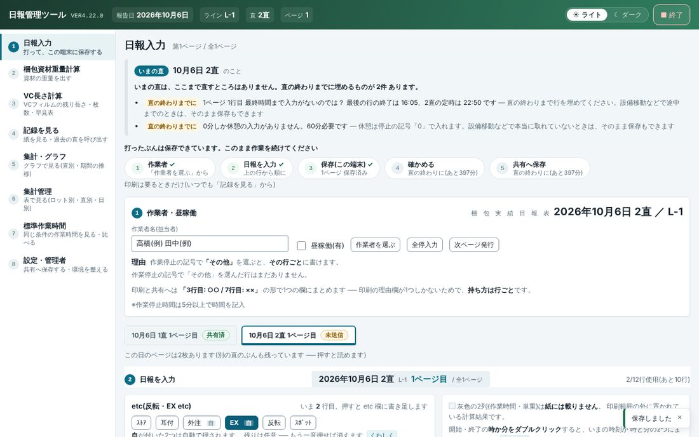
1 2 3 4 5 6 7 8 9- 報告日・ライン・直・ページ: いま打っている日報がどれかです。ラインが「未設定」のときは打てません。
- ライト / ダーク: 画面の明るさを変えます(好みで)。
- ■ 終了: ツールを閉じます(終わるとき)。
- 左の並び: 画面を切り替えます。上から作業の順です。設定・管理者の下に赤い「共有へ未送信 ◯直ぶん」が出たら、共有へ保存していない直があります。
- いまの直の知らせ: 直すところや、直の終わりまでに埋めるもの(最後の時刻まで・休憩60分)が出ます。直の途中で「直の終わりまでに」と出るのは、ふつうのことです。
- 直の進み具合: ①作業者 → ②日報を入力 → ③保存 → ④確かめる → ⑤共有へ保存。済んだものに ✓ が付きます。いまやることにはここへが付き、押すとその場所へ動きます。
- 作業者・昼稼働: 作業者名と、作業者を選ぶ・全停入力・次ページ発行のボタンです。
- ページの札: その日のページです。「共有済」は共有へ渡したページ、「未送信」はまだのページです。押すと読めます。
- 日報を入力: この下に12行の表と、保存のボタンがあります(4-2)。
左の並び(8つの画面)
| 画面 | 何をするか | だれが・いつ |
|---|---|---|
| 1 日報入力 | 日報を打って、このパソコンに保存する。直の終わりに共有へ保存する | 作業者・毎直 |
| 2 梱包資材重量計算 | 寸法から梱包資材の重量・GWを出す | 要るとき |
| 3 VC長さ計算 | VCフィルムの残り長さ・枚数・早見表 | 要るとき |
| 4 記録を見る | 保存した日報の紙を見る・刷る。過去の直を呼び出す(管理者) | だれでも |
| 5 集計・グラフ | 重量・枚数・稼働率・停止をグラフで見る。集計CSVを出す | 班長など |
| 6 集計管理 | 日別・直別・ロット別の数字を表で見る | 班長など |
| 7 標準作業時間 | 同じ条件の作業時間を見る・比べる | 班長など |
| 8 設定・管理者 | 共有へ保存・置き場所・マスタ・このパソコンのラインなど | 班長・管理者 |
4 記録を見る・6 集計管理・7 標準作業時間は、アクセス権限の表でこのパソコンの行に mode:fullaccess(か Administrator)がある場合だけ出ます。無いパソコンは 1・2・3・5・8 だけです(番号はそのまま)。どちらになっているかは設定・管理者の「アクセス権限の表」の「左のタブ」に出ます。表を読めない日は、これまでどおり全部出ます。
4. 毎日の操作(直ひと回り)
直の流れは「直の始め → 作業者を選ぶ → 行を打つ → 保存 → 直の終わりに確かめて共有へ保存 → (要るときだけ)印刷」です。画面の進み具合の帯(3. の 6)も同じ順に並んでいます。
4-1. 直の始め ── 作業者を選ぶ
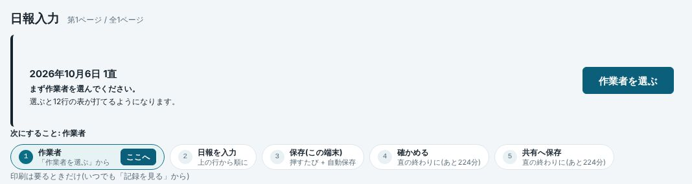
1 2- 作業者を選ぶ: 押すと名簿の窓が開きます。
- 進み具合の帯の「① 作業者」にここへが付いています。
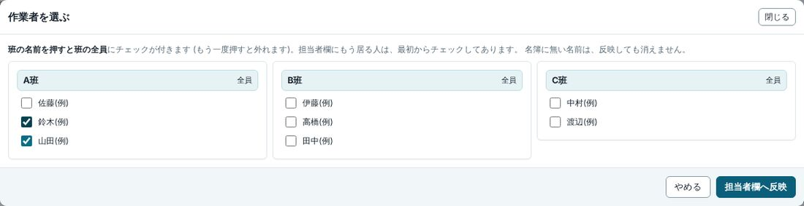
1 2 3班の名前(A班 など。右の「全員」)を押すと、その班の全員にチェックが付きます(もう一度押すと外れます)。
または、名前を1人ずつ押してチェックを付けます。
担当者欄へ反映を押します。「作業者名(担当者)」の欄に名前が入り、表が打てるようになります。
昼稼働があるときは昼稼働(有)にチェックを付けます。
気をつけること前の直が共有へ保存されていないと、作業者の前に赤い「前の直」の帯が出ます。共有へ保存するを押します。前の直に直すところが残っていて押せないときは、直せないまま引き継ぐを押して、班長に知らせます。
4-2. 行を打つ
上の行から順に、1ロット1行で打ちます。表は横に長いので、右の列(作業停止・実績合計)は表を横に動かして打ちます。
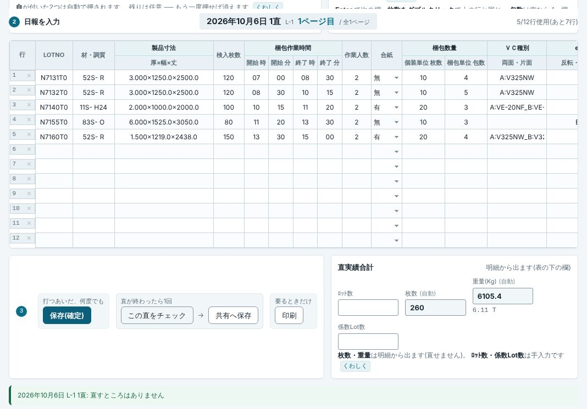
1 2 3 4 5 6 7 8- LOTNO: ロット番号を7桁で打ちます。7桁そろうと、その行が自動で埋まります。
- 自動で入る欄: 材・調質・製品寸法・検入枚数、それに合紙・ＶＣ種別・単重。etc の「外注」「EX」も自動で付くことがあります。違っていたら打ち直せます。
- 梱包作業時間: 開始と終了の「時」「分」を2桁ずつ打ちます(例:
0700)。終了を打つと、次の行の開始に同じ時刻が入ります。 - 作業人数・梱包数量: 作業人数、個装単位 枚数、梱包単位 包数を打ちます。実績合計の枚数・重量は自動で出ます。
- 保存(確定): このパソコンに保存します(4-3)。
- この直をチェック → 共有へ保存: 直の終わりに1回押します(4-4)。
- 印刷: 紙が要るときだけ押します(4-5)。
- 直実績合計: 枚数・重量は明細から出ます(直せません)。ﾛｯﾄ数・係数Lot数は手で打つラインもあります。
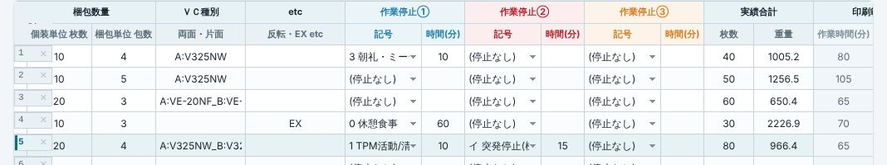
1 2 3- 作業停止①〜⑤: 「記号」を一覧から選び、「時間(分)」を打ちます。停止は5分以上のときに書きます。休憩は0 休憩食事で、直の中で合わせて60分要ります。
- 停止の組の切り替え: 表には作業停止を1組ずつ出します(表が横に広がらないように)。見出しの ①②③④⑤ で出す組を替えます。時間を3桁打つと次の組へ自動で進み、記号を空のまま Enter を押すと残りの組は飛ばします。右の「停止」の欄に、どの組に入っているか(押すとその組へ)と合計の分が出ます。④⑤は紙(用紙)に無い欄で、使ったページだけ印刷で③の右に足します。
- 実績合計: 枚数(個装単位 枚数 × 包数)と重量。自動で出ます。
- 作業時間(分)・単重(灰色): 計算の結果です。紙には載りません。
打つときのこつ
- Enter で次の欄へ進みます。
- 開始・終了の「時」か「分」をダブルクリックすると、いまの時刻が入ります。
- 個装単位 枚数をダブルクリックすると、上の行と同じ数が入ります。包数は空なら 1 です。
- 「◯行目の重量を ◯◯ に変更しますか？」と聞かれたら、ふつうは OK を押します(枚数や包数を直したので、重量を出し直します)。量った重量を残したいときだけキャンセル。
- 停止の記号でヨ その他(理由を記載)を選ぶと、「理由を書く」の窓が出ます。理由を打って理由欄へ入れるを押します。
- etc の欄は、表の上のｽﾄｱ耳付外注EX反転ｽﾎﾟｯﾄを押して入れます(いま打っている行に付きます。もう一度押すと消えます)。
- 1つのロットに引当が2つ以上あると、「引当を選ぶ」の窓が出ます。正しい引当を選んでこの引当で埋めるを押します。
- 行を空にするときは、行番号の横の ✕ を押し、空にするを押します。
- 12行を使い切ったら次ページ発行を押します。いまのページを保存して、2ページ目が出ます。前のページは表の下の「ページ」の欄で選ぶと直せます。
- 直のあいだ設備がずっと止まっていたときは全停入力を使います(直に1回だけ)。
4-3. 保存 ── 自動保存と「保存(確定)」
- 自動保存: 欄から離れるたびに、このパソコンへ自動で保存します(前の自動保存から1分たっていないときは見送ります。「前回の自動保存から◯秒しか経っていません」と出るのはこのためです)。
- 保存(確定): 打っている途中で何度押してもかまいません。このパソコンに保存し、集計も作り直します。「保存しました」と出れば済みです。
気をつけること保存(確定)は、間違いがあると保存しません(梱包数が検入枚数より多い・停止の記号が一覧に無い・開始と終了が同じ、など)。画面に出た行と欄を直して、もう一度押します。
こつここまでの保存はこのパソコンの中だけです。みんなが見る日報管理には、まだ渡っていません。
4-4. 直の終わり ── 確かめて「共有へ保存」
直の終わりが近づく(15分前ごろ)と、画面が「◯直 の実績」に切り替わります。この直の数字と、直すところが出ます。
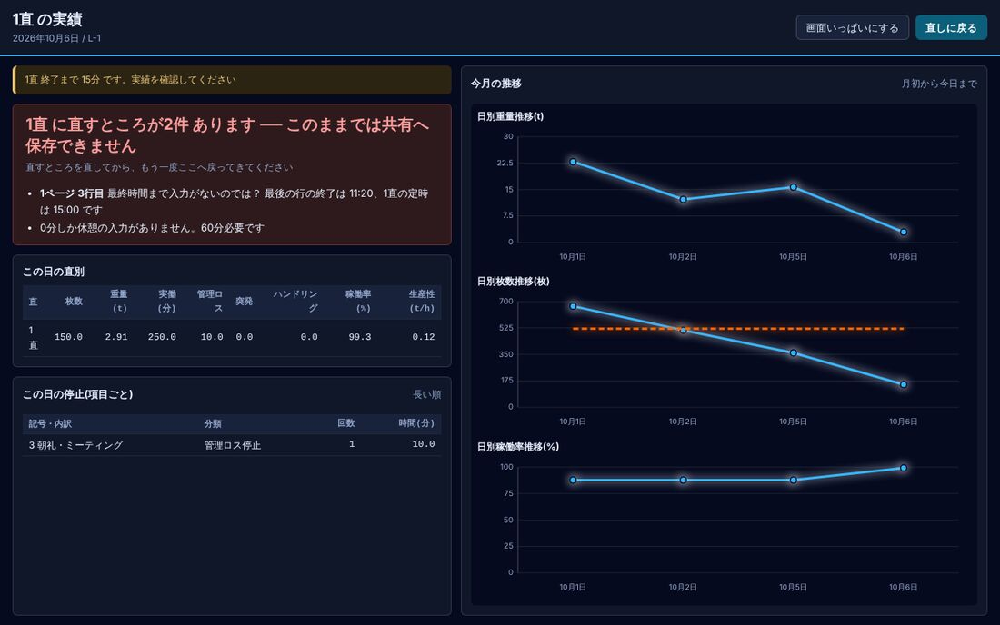
1 2 3 4- 直の終わりまでの残り時間です。
- 直すところ: このままでは共有へ保存できないものです。
- 直しに戻る: 日報入力へ戻ります。
- 今月の重量・枚数・稼働率の推移です(赤い点線は目標)。
直しに戻るを押して日報入力へ戻り、直の最後(1直なら 15:00)まで行を打ちます。休憩(0 休憩食事)が合わせて60分あるかも見ます。
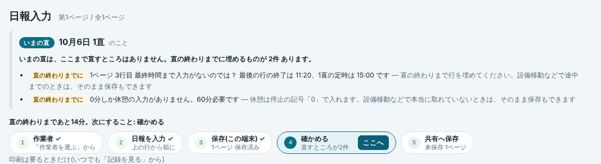
1 2まだ残っているもの(1)と、次にすること「確かめる」(2)。 保存(確定)を押します。
この直をチェックを押します。表の下に「直すところはありません」と出れば大丈夫です。直すところが出たら、その行を直して 2 からやり直します(このボタンは何も保存しません。直の途中でも押せます)。
共有へ保存を押します。少し待つと、進み具合の帯に「この直はここまで済んでいます。お疲れさまでした」と出て、5つ全部に ✓ が付きます。ページの札は「共有済」になります。
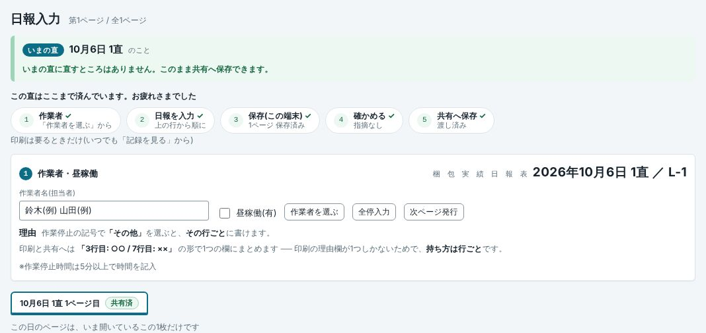
1 2共有へ保存が済んだところ。
気をつけること直のあいだ画面を開いておくと、残り5分で自動で「確定」(チェックと集計)が走ります。でも共有へは自動で渡りません。共有へ保存は必ず押してください。
こつ設備移動などで直の最後まで打てないときは、共有へ保存で断られたあとに出る欄へ「設備移動のため保存」と打ってこのまま共有へ保存を押します(最後まで打っていない・休憩が足りない、のときだけ通せます)。
4-5. 印刷(要るときだけ)
紙は刷らなくても日報は残ります。紙が要るときは、日報入力の印刷(いまの直)か、記録を見るの紙を見る(ほかの直)を押します。別の窓に紙が開きます。
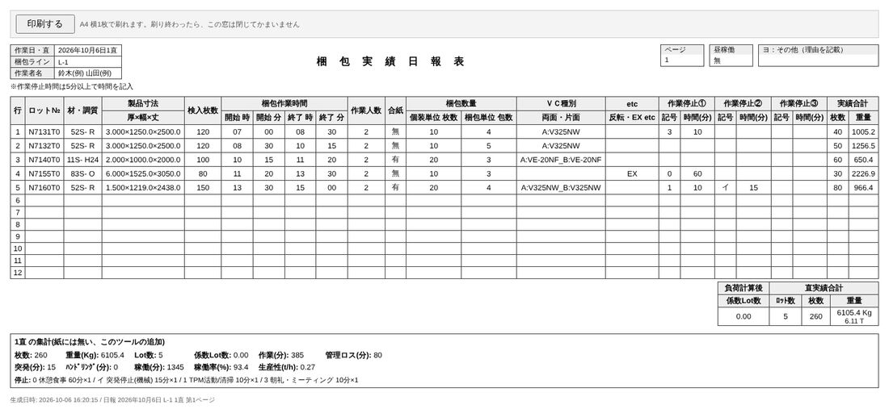
1 2 3- 印刷する: 押すと印刷の画面が出ます(Ctrl+P でも同じ)。A4横1枚です。刷り終わったら窓は閉じてかまいません。
- 直実績合計(紙と同じ場所)。
- この直の集計(紙には無い、このツールの追加)。
気をつけること紙に出るのは保存してあるぶんだけです。打ったばかりの行を載せたいときは、先に保存(確定)を押します。
5. そのほかの操作
記録を見る ── 紙を見る・呼び出す
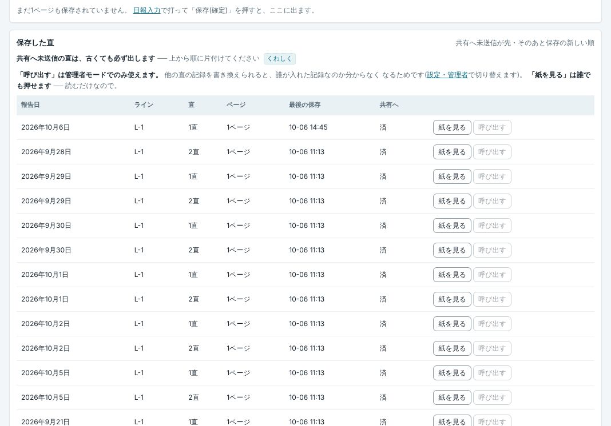
1 2- 共有へ: 「済」は共有へ渡した直です。共有へ未送信の直は、古くても一覧の上に出ます。
- 紙を見る: その直の紙を別の窓で開きます。だれでも押せます(読むだけ)。呼び出すは、過去の直を日報入力に開いて直すボタンで、管理者モードのときだけ押せます。
一覧に無い古い直は、下の「日付を指定して見る」で報告日・ライン・直を選んで中身を見る・この直ぜんぶの紙を押します。
気をつけること呼び出しているあいだは、いまの直に打てません。直し終わったら最新のページに戻るを押します(上の帯の印の ✕ でも戻れます)。
集計・グラフ / 集計管理
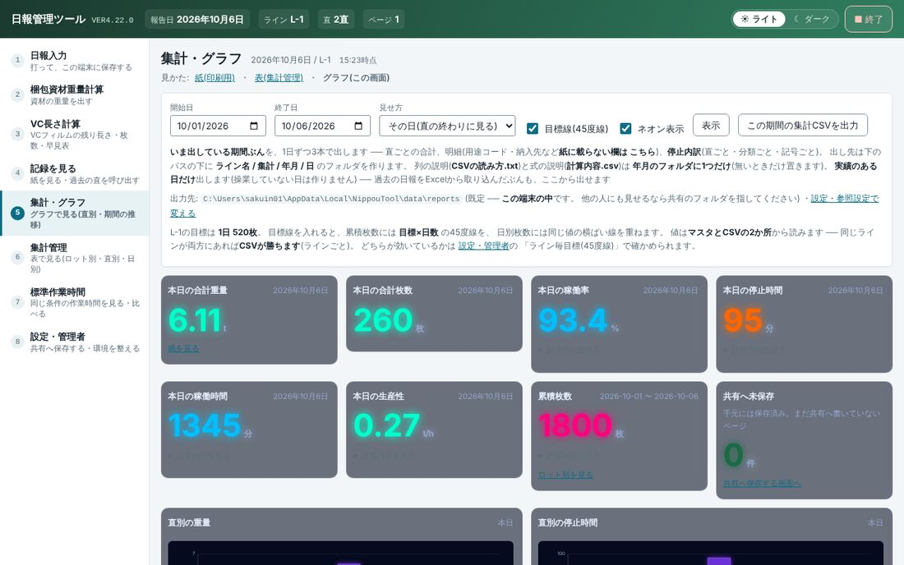
1 2 3 4 5- 開始日・終了日・見せ方: 「その日(直の終わりに見る)」か「期間(まとめて見る)」を選びます。目標線(45度線)・ネオン表示のチェックもここです。
- 表示: 選んだ期間で描き直します。
- この期間の集計CSVを出力: 期間ぶんの集計をCSVで出します(出し先は画面に書いてあります)。
- 本日の合計重量・枚数・稼働率・停止時間など。下にはグラフが続きます(大きく見るで1つを大きく)。
- 共有へ未保存: まだ共有へ渡していないページの数です。
集計管理では、同じ数字を表で見ます(日別の集計・直別の集計・ロット別など)。開始日・終了日を選んで表示、CSVが要るときは4本ともCSVに出すを押します。
梱包資材重量計算
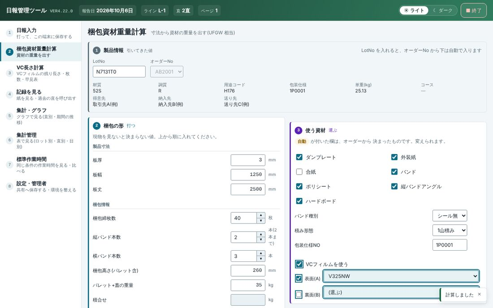
1 2 3LotNo を打ちます。オーダーNo から下(材質・調質・単重など)は自動で入ります。
梱包の形を上から順に打ちます(板厚・板幅・板丈、梱包締枚数、縦バンド本数(2本まで)、横バンド本数、梱包高さ、パレット+蓋の重量)。GWを出すときはAインプット重量も打ちます。
使う資材を確かめます。「自動」が付いたものはオーダーから決まったものです(変えられます)。
下の計算を押すと「4 結果」に資材ごとの重量・梱包資材重量・風袋総重量・GWが出ます。梱包図を出すで梱包の外形の図、梱包数を入れて印刷で紙が出ます。やり直すときは入力値クリア。
VC長さ計算
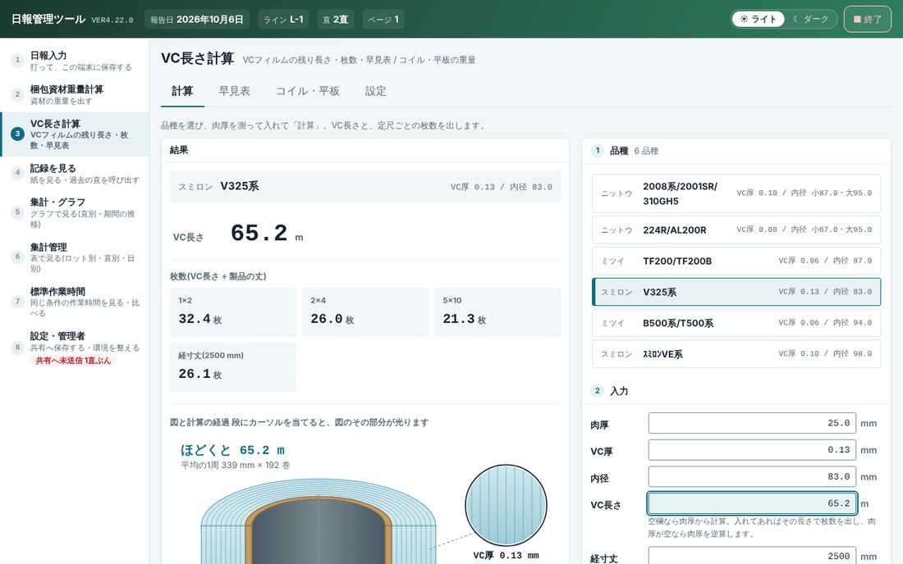
1 2 3 4- タブ: 計算 / 早見表 / コイル・平板(重量) / 設定。
- 品種を押して選びます。VC厚・内径が入ります。
- 肉厚を測って打ち、計算を押します(経寸丈は任意)。
- 結果: VC長さと、定尺ごとの枚数が出ます。
標準作業時間
共有へ保存した直の実績から、同じ条件(ライン・班・用途コード・包装仕様NO・サイズ)の作業時間の標準を出します。条件を入れて表示を押すと表が出ます。おもに班長が見る画面です。
6. 設定
設定は設定・管理者の画面にあります。ふだん作業者が触るのは「保存と出力」の共有へ保存くらいです(日報入力のボタンと同じ働き)。ほかは据え付けのときに班長・管理者が触ります。
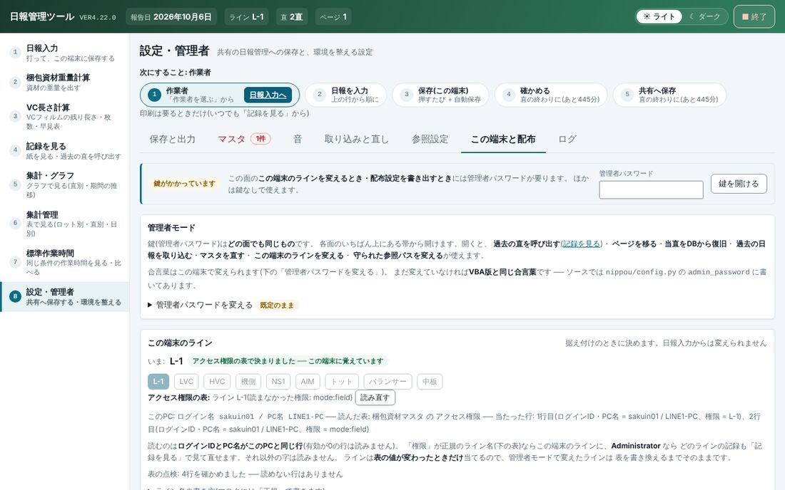
1 2 3 4 5- 面(タブ): 保存と出力 / マスタ / 音 / 取り込みと直し / 参照設定 / この端末と配布 / ログ。困りごとがある面には赤い数字が付きます。
- 鍵: 管理者パスワードを打って鍵を開ける。管理者モードになり、上の帯に印が出ます(印の ✕ で終わります)。
- 管理者パスワードを変える: 合言葉はこのパソコンで変えられます。
- この端末のライン: いまのラインと、どう決まったか(例: 「アクセス権限の表で決まりました」)。
- 読み直す: マスタの「アクセス権限」の表を読み直します。
| 面 | 中身 | パスワード |
|---|---|---|
| 保存と出力 | 共有の日報管理へ保存(共有へ保存)・月替わりの書き出し | 共有の置き場所を変えるときだけ要る |
| マスタ | マスタの表を見る・直す、ライン毎目標(45度線)、停止内訳、直の境界時刻 | 見るのは不要。直すときに要る |
| 音 | いつ何の音を鳴らすか・試聴 | 置き場所を変えるときに要る |
| 取り込みと直し | 過去の日報の取り込み・当直をDBから復旧・集計の作り直し など | 全部に要る(管理者) |
| 参照設定 | 参照マスタ・共有・書き出し先などのフォルダ(フォルダを選ぶ…) | パスを変えるときに要る |
| この端末と配布 | 管理者モード・この端末のライン・ファイルの置き場所・配布設定 | ラインを変える・配布設定を書き出すときに要る |
| ログ | エラーと操作の記録 | — |
こつ仕掛(ロット・引当・受注)の置き場所は2つ決められます(参照設定の「仕掛ロット・引当・受注の置き場所」と「(2つ目)」)。ロット番号を打ったとき、1つ目にファイルが無い・そのロットが無いときは、2つ目を見ます。2つ目が空なら1つ目だけを見ます。
こつこのパソコンのラインは、ふつうはマスタの「アクセス権限」の表(ログインIDとPC名の行)で自動で決まります。表で決まらないときは、管理者が「この端末と配布」→「この端末のライン」でラインを押して決めます。管理者パスワードは班長・管理者に聞いてください。
してはいけないこと管理者パスワードを紙に書いてパソコンに貼らないでください。ほかのラインのパソコンのラインを変えないでください(別のラインの紙に混ざります)。
7. 困ったとき
| こうなった | こうする |
|---|---|
| 「この端末のラインがまだ決まっていません」と出て、表が打てない(上の帯のラインが「未設定」) | 班長・管理者に知らせます。管理者が、マスタの「アクセス権限」の表にこのパソコンの行を書くか、ラインを決める(設定・管理者 →「この端末と配布」→「この端末のライン」)で決めます。 |
| LOTNO を打っても材・調質などが入らない。「SIKALOT に ロット ◯◯ がありません。手で入れてください。」 | 番号を見直します(7桁)。正しいのに出ないときは、その行は手で打ちます。 |
| 「引当を選ぶ」の窓が出た | 正しい引当を選んでこの引当で埋めるを押します。 |
| 「◯行目の重量を ◯◯ に変更しますか？」 | ふつうは OK。量った重量を残したいときだけキャンセル。 |
| 保存(確定)・共有へ保存で断られた | 出た一覧の「◯ページ ◯行目」を直して、もう一度押します。最後まで打てない直(設備移動など)は、出てきた欄に「設備移動のため保存」と打ってこのまま共有へ保存。 |
| 直の始めに赤い「前の直」の帯が出て、作業者を選べない | 共有へ保存するを押します。直すところが残っていて通らないときは直せないまま引き継ぐを押し、班長に知らせます。 |
| 「前の直」に保存が無い、という知らせが出た | 前の直の人に、打ち忘れがないか聞きます。読んだら分かりました。入れ直すのは管理者です(記録を見る → 呼び出す)。 |
| 「直が変わりました。…どちらに入れるか選んでください。」/ 上に「画面を引き直す」の帯 | 画面を開いたまま直が変わりました。どちらの直に入れるかを選びます。帯なら画面を引き直すを押します。 |
| 上の帯に「他の直のデータを開いています」「呼出中」が出ていて、いまの直が打てない | 最新のページに戻るを押します(帯の印の ✕ でも戻れます)。 |
| 「バックエンドに接続できません」の帯 | 再接続を押します。だめなら再読込。それでもだめなら、日報複合ツールを終了して、もう一度開きます。 |
| 「この画面の操作を読み込めませんでした ── ボタンは効きません」 | 日報複合ツールを終了して、もう一度開きます。くり返すときは、出ている番号を管理者に伝えます。 |
| 直の終わりに「◯直 の実績」の暗い画面に切り替わった | ふつうのことです(4-4)。直しに戻るで日報入力へ戻ります。 |
| 4ページ目を出そうとしたら確かめられた | 本当に4ページ目が要るなら、そのまま進めます(押し間違いを防ぐための確かめです)。 |
こつ日報複合ツールが開けないときの予備として、日報ツールだけを開く方法(ブラウザ版)もあります。使うときは管理者に聞いてください。
8. 終わるとき
直の終わりなら、共有へ保存が済んでいるか見ます(進み具合の帯の ⑤ に ✓)。
日報複合ツールの右上の終了を押して閉じます。日報の画面の■ 終了を押しても、日報複合ツール全体が閉じます。
気をつけること打ったものはこのパソコンに残っているので、閉じても消えません。ただし、共有へ保存していない直は、みんなからは見えません。
日報管理ツール VER4.26.2 の操作説明書です。日報複合ツールの「説明書」ボタンから、いつでも開けます。画面写真の名前(山田(例) など)・ロット番号・フォルダの場所はすべて例です。